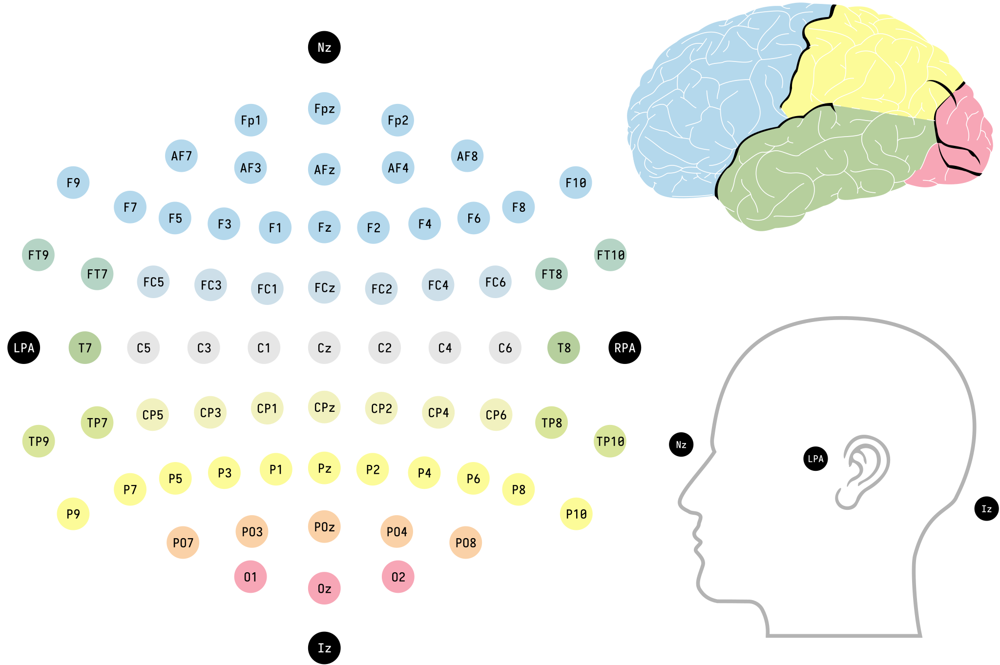
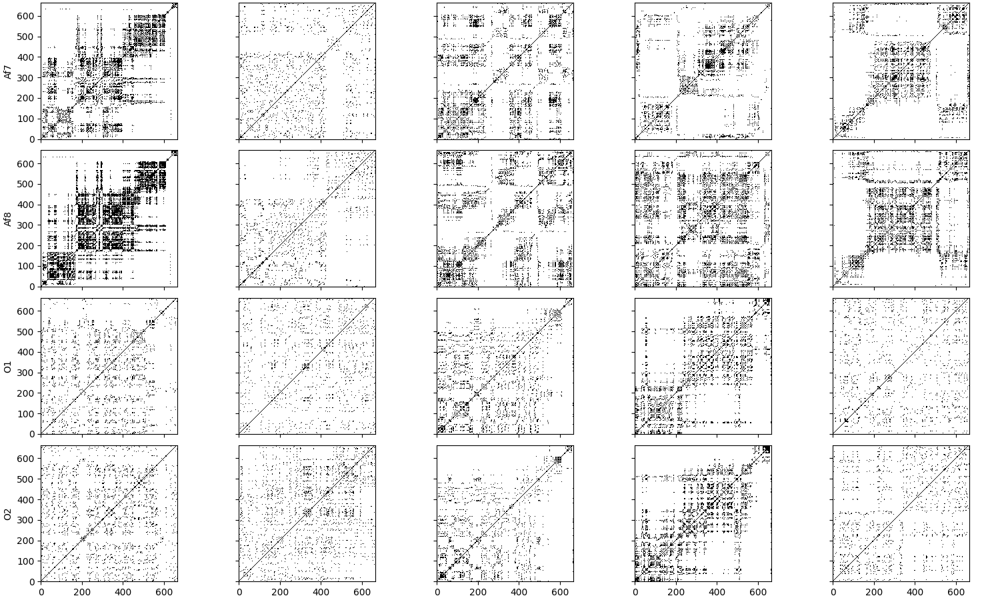
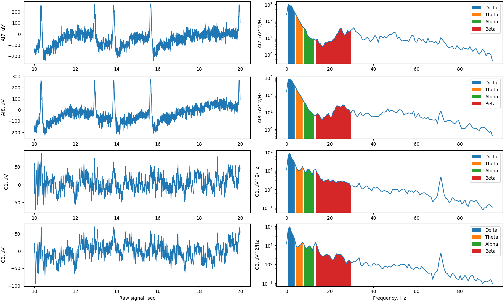
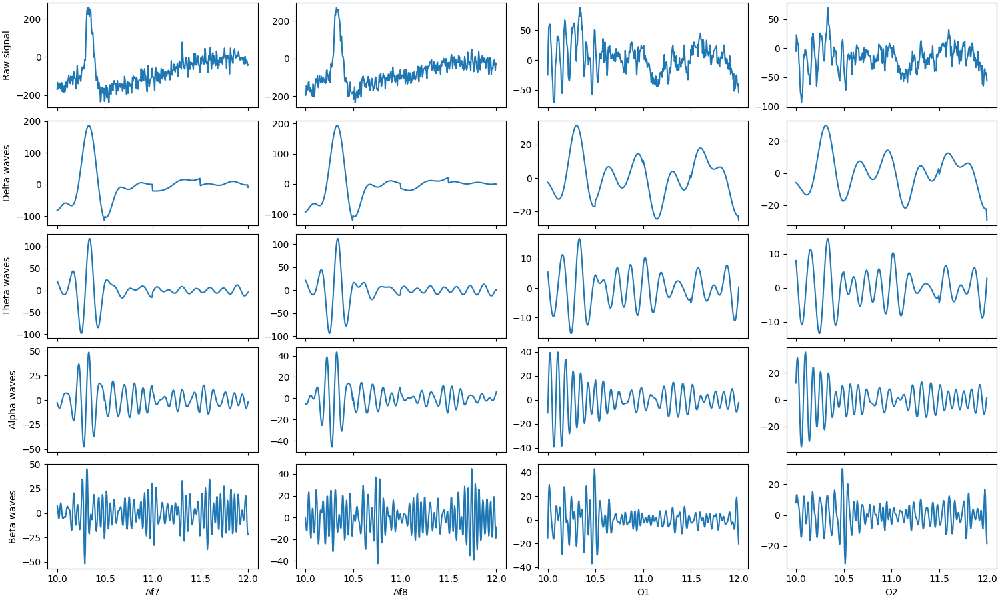
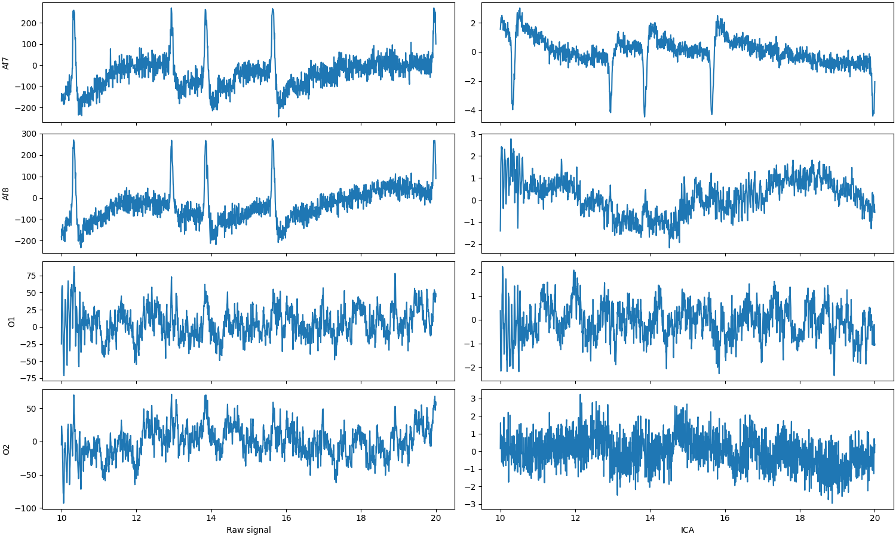

<!DOCTYPE html>
<html lang="en">
  <head>
    <meta charset="utf-8" />
    <meta name="viewport" content="width=device-width, initial-scale=1.0, maximum-scale=1.0, user-scalable=no" />

    <title></title>
    <link rel="stylesheet" href="dist/reveal.css" />
    <link rel="stylesheet" href="dist/theme/black.css" id="theme" />
    <link rel="stylesheet" href="plugin/highlight/zenburn.css" />
	<link rel="stylesheet" href="css/layout.css" />
	<link rel="stylesheet" href="plugin/customcontrols/style.css">

	<link rel="stylesheet" href="plugin/reveal-pointer/pointer.css" />


    <script defer src="dist/fontawesome/all.min.js"></script>

	<script type="text/javascript">
		var forgetPop = true;
		function onPopState(event) {
			if(forgetPop){
				forgetPop = false;
			} else {
				parent.postMessage(event.target.location.href, "app://obsidian.md");
			}
        }
		window.onpopstate = onPopState;
		window.onmessage = event => {
			if(event.data == "reload"){
				window.document.location.reload();
			}
			forgetPop = true;
		}

		function fitElements(){
			const itemsToFit = document.getElementsByClassName('fitText');
			for (const item in itemsToFit) {
				if (Object.hasOwnProperty.call(itemsToFit, item)) {
					var element = itemsToFit[item];
					fitElement(element,1, 1000);
					element.classList.remove('fitText');
				}
			}
		}

		function fitElement(element, start, end){

			let size = (end + start) / 2;
			element.style.fontSize = `${size}px`;

			if(Math.abs(start - end) < 1){
				while(element.scrollHeight > element.offsetHeight){
					size--;
					element.style.fontSize = `${size}px`;
				}
				return;
			}

			if(element.scrollHeight > element.offsetHeight){
				fitElement(element, start, size);
			} else {
				fitElement(element, size, end);
			}		
		}


		document.onreadystatechange = () => {
			fitElements();
			if (document.readyState === 'complete') {
				if (window.location.href.indexOf("?export") != -1){
					parent.postMessage(event.target.location.href, "app://obsidian.md");
				}
				if (window.location.href.indexOf("print-pdf") != -1){
					let stateCheck = setInterval(() => {
						clearInterval(stateCheck);
						window.print();
					}, 250);
				}
			}
	};


        </script>
  </head>
  <body>
    <div class="reveal">
      <div class="slides"><section  data-markdown><script type="text/template"><!-- .slide: class="drop" -->
<div class="" style="position: absolute; left: 0px; top: 0px; height: 700px; width: 960px; min-height: 700px; display: flex; flex-direction: column; align-items: center; justify-content: center" absolute="true">

<style>
	.reveal {
		font-size: 1.75em
	}
</style>

Дисертаційна робота за темою:

#### Дослідження динаміки психофізіологічних станів мозку людини, які ідентифікують її розслаблення та концентрацію, за допомогою електроенцефалограм.

Керівник: Білозьоров В. Е.
</div></script></section><section  data-markdown><script type="text/template"><!-- .slide: class="drop" -->
<div class="" style="position: absolute; left: 0px; top: 0px; height: 700px; width: 960px; min-height: 700px; display: flex; flex-direction: column; align-items: center; justify-content: center" absolute="true">

#### Задачі дослідження
1. Перевірка валідності та обробка даних у режимі реального часу, включаючи розгляд сценаріїв часткової відсутності даних.
2. Розробка та впровадження методів обробки та фільтрації артефактів при зборі ЕЕГ-даних за допомогою фільтрів.
3. Використання методів нелінійної динаміки для аналізу поведінки хаотичних часових рядів ЕЕГ-даних у випадку розслаблення та концентрації.
4. Розробка системи, яка на основі часових рядів ЕЕГ-даних, здатна обчислювати рівень розслаблення та концентрації мозку.
</div></script></section><section  data-markdown><script type="text/template"><!-- .slide: class="drop" -->
<div class="" style="position: absolute; left: 0px; top: 0px; height: 700px; width: 960px; min-height: 700px; display: flex; flex-direction: column; align-items: center; justify-content: center" absolute="true">

#### Актуальність теми

У сучасному світі існують доступні пристрої для отримання ЕЕГ даних у режимі реального часу, але існує недостатньо розроблених та оптимізованих підходів до аналізу цих даних та реалізації відповідних алгоритмів. Це ставить перед дослідниками та розробниками питання щодо того, як ефективно обробляти дані ЕЕГ в залежності від конкретної задачі. Однією з ключових областей дослідження у цьому контексті є визначення психофізіологічних станів мозку, зокрема, розслаблення та концентрації. Розуміння та краще використання цих станів мають важливе значення для подальшого розвитку застосувань ЕЕГ-технологій у медицині, психології, спорті, освіті та інших сферах людської діяльності.
</div></script></section><section  data-markdown><script type="text/template"><!-- .slide: class="drop" -->
<div class="" style="position: absolute; left: 0px; top: 0px; height: 700px; width: 960px; min-height: 700px; display: flex; flex-direction: column; align-items: center; justify-content: center" absolute="true">

#### Біофізична модель


</div></script></section><section  data-markdown><script type="text/template"><!-- .slide: class="drop" -->
<div class="" style="position: absolute; left: 0px; top: 0px; height: 700px; width: 960px; min-height: 700px; display: flex; flex-direction: column; align-items: center; justify-content: center" absolute="true">


</div></script></section><section  data-markdown><script type="text/template"><!-- .slide: class="drop" -->
<div class="" style="position: absolute; left: 0px; top: 0px; height: 700px; width: 960px; min-height: 700px; display: flex; flex-direction: column; align-items: center; justify-content: center" absolute="true">


</div></script></section><section  data-markdown><script type="text/template"><!-- .slide: class="drop" -->
<div class="" style="position: absolute; left: 0px; top: 0px; height: 700px; width: 960px; min-height: 700px; display: flex; flex-direction: column; align-items: center; justify-content: center" absolute="true">

#### Пристрої зчитування ЕЕГ - Медичні


</div></script></section><section  data-markdown><script type="text/template"><!-- .slide: class="drop" -->
<div class="" style="position: absolute; left: 0px; top: 0px; height: 700px; width: 960px; min-height: 700px; display: flex; flex-direction: column; align-items: center; justify-content: center" absolute="true">

#### Пристрої зчитування ЕЕГ - Muse 2


</div></script></section><section  data-markdown><script type="text/template"><!-- .slide: class="drop" -->
<div class="" style="position: absolute; left: 0px; top: 0px; height: 700px; width: 960px; min-height: 700px; display: flex; flex-direction: column; align-items: center; justify-content: center" absolute="true">

#### Математичні моделі

* Рекурентний аналіз - це метод дослідження динамічних систем, що базується на вивченні їхньої поведінки через час шляхом ітераційного застосування математичних виразів. Цей аналіз дозволяє виявити структуру та властивості системи, зокрема, визначити стабільність, кінцеві точки та хаотичність.
* Частотний аналіз - це метод дослідження сигналів та систем, що використовується для вивчення їхньої структури та властивостей у частотному діапазоні. Це дозволяє виявити основні складові сигналу та їхні амплітуди. Частотний аналіз допомагає в розумінні динаміки сигналів, виявленні паттернів та залежностей між ними, а також у розробці методів фільтрації та обробки сигналів для подальшого використання в різних додатках.
</div></script></section><section  data-markdown><script type="text/template"><!-- .slide: class="drop" -->
<div class="" style="position: absolute; left: 0px; top: 0px; height: 700px; width: 960px; min-height: 700px; display: flex; flex-direction: column; align-items: center; justify-content: center" absolute="true">

#### Рекурентні діаграми


</div></script></section><section  data-markdown><script type="text/template"><!-- .slide: class="drop" -->
<div class="" style="position: absolute; left: 0px; top: 0px; height: 700px; width: 960px; min-height: 700px; display: flex; flex-direction: column; align-items: center; justify-content: center" absolute="true">

#### Рекурентні параметри

- Determinism (DET) - Детермінізм

	`$\displaystyle\text{DET} = \frac{\sum_{\ell=\ell_\min}\ell\, P(\ell)}{\sum_{\ell=1}^{N}\ell P(\ell)}$`, де `$P(\ell)$` - це частотний розподіл довжин `$\ell$` діагональних ліній (тобто він враховує, скільки екземплярів мають довжину `$\ell$`)
- Average diagonal line length (L) - Середня довжина діагональної лінії

	`$\displaystyle\text{L} = \frac{\sum_{\ell=\ell_\min}\ell\, P(\ell)}{\sum_{\ell=\ell_\min}P(\ell)}$`
	
- Trapping time (TT) - Час попадання в пастку

	`$\displaystyle\text{TT} = \frac{\sum_{v=v_\min}^{N} v P(v)} {\sum_{v=v_\min}^{N} P(v)}$`,	де `$P(v)$` - це частотний розподіл довжин `$v$` вертикальних ліній, які мають принаймні довжину `$v_\min$`.
</div></script></section><section  data-markdown><script type="text/template"><!-- .slide: class="drop" -->
<div class="" style="position: absolute; left: 0px; top: 0px; height: 700px; width: 960px; min-height: 700px; display: flex; flex-direction: column; align-items: center; justify-content: center" absolute="true">

#### Частотний аналіз та ритми мозку


</div></script></section><section  data-markdown><script type="text/template"><!-- .slide: class="drop" -->
<div class="" style="position: absolute; left: 0px; top: 0px; height: 700px; width: 960px; min-height: 700px; display: flex; flex-direction: column; align-items: center; justify-content: center" absolute="true">

#### Перетворення Фур'є

Перетворення Фур'є функції `$f(t)$` математично визначається як комплекснозначна функція `$ F(\omega) \,$`, яка задається інтегралом:

`$ \displaystyle F(\omega) = \int_{-\infty}^\infty f(t) e^{-i\omega t} dt  $`

'''Обернене перетворення''' Фур'є задається виразом:

`$ \displaystyle \dfrac{1}{2\pi}\int_{-\infty}^\infty F(\omega) e^{i\omega t} d\omega = f(t) $`
</div></script></section><section  data-markdown><script type="text/template"><!-- .slide: class="drop" -->
<div class="" style="position: absolute; left: 0px; top: 0px; height: 700px; width: 960px; min-height: 700px; display: flex; flex-direction: column; align-items: center; justify-content: center" absolute="true">

#### Ритми мозку

|Ритм|Діапазон (Гц)|Опис|
|---|---|---|
|Дельта|0.5 - 4|Глибокий сон або безсвідомість|
|Тета|4 - 8|Релаксація, медитація, зосередженість|
|Альфа|8 - 13|Спокій, релаксація при закритих очах|
|Бета|13 - 30|Бодрість, концентрація, висока активність мозку||   |
|Гама|30 - 100|Висока концентрація, когнітивні процеси, увага|
</div></script></section><section  data-markdown><script type="text/template"><!-- .slide: class="drop" -->
<div class="" style="position: absolute; left: 0px; top: 0px; height: 700px; width: 960px; min-height: 700px; display: flex; flex-direction: column; align-items: center; justify-content: center" absolute="true">

#### Частотні шуми

|Тип шуму|Діапазон (Гц)|Опис|
|---|---|---|
|Низькочастотний шум (LFN)|0.1 - 1|Шум з низькою частотою, може бути пов'язаний з рухами м'язів або серцевими артефактами|
|Високочастотний шум (HFN)|> 30|Шум з високою частотою, може виникати внаслідок електричної активності шкіри або електромагнітних джерел|
|Інтерференція мережі|50/60|Шум, що виникає внаслідок інтерференції від електричної мережі|
|Рухові артефакти|Дельта - Бета|Артефакти, спричинені рухами пацієнта|
|Біологічні артефакти|-|Артефакти, пов'язані з проводимістю шкіри, рухами очей або м'язів обличчя|
</div></script></section><section  data-markdown><script type="text/template"><!-- .slide: class="drop" -->
<div class="" style="position: absolute; left: 0px; top: 0px; height: 700px; width: 960px; min-height: 700px; display: flex; flex-direction: column; align-items: center; justify-content: center" absolute="true">

#### Ритми мозку декількох сигналів


</div></script></section><section  data-markdown><script type="text/template"><!-- .slide: class="drop" -->
<div class="" style="position: absolute; left: 0px; top: 0px; height: 700px; width: 960px; min-height: 700px; display: flex; flex-direction: column; align-items: center; justify-content: center" absolute="true">

#### Альфа канал, як показник розлаблення при закритих очах


</div></script></section><section  data-markdown><script type="text/template"><!-- .slide: class="drop" -->
<div class="" style="position: absolute; left: 0px; top: 0px; height: 700px; width: 960px; min-height: 700px; display: flex; flex-direction: column; align-items: center; justify-content: center" absolute="true">

#### Аналіз незалежних компонент


</div></script></section><section  data-markdown><script type="text/template"><!-- .slide: class="drop" -->
<div class="" style="position: absolute; left: 0px; top: 0px; height: 700px; width: 960px; min-height: 700px; display: flex; flex-direction: column; align-items: center; justify-content: center" absolute="true">

# Дякую за увагу!
</div></script></section></div>
    </div>

    <script src="dist/reveal.js"></script>

    <script src="plugin/markdown/markdown.js"></script>
    <script src="plugin/highlight/highlight.js"></script>
    <script src="plugin/zoom/zoom.js"></script>
    <script src="plugin/notes/notes.js"></script>
    <script src="plugin/math/math.js"></script>
	<script src="plugin/mermaid/mermaid.js"></script>
	<script src="plugin/chart/chart.min.js"></script>
	<script src="plugin/chart/plugin.js"></script>
	<script src="plugin/customcontrols/plugin.js"></script>
	<script src="plugin/reveal-pointer/pointer.js"></script>

    <script>
      function extend() {
        var target = {};
        for (var i = 0; i < arguments.length; i++) {
          var source = arguments[i];
          for (var key in source) {
            if (source.hasOwnProperty(key)) {
              target[key] = source[key];
            }
          }
        }
        return target;
      }

	  function isLight(color) {
		let hex = color.replace('#', '');

		// convert #fff => #ffffff
		if(hex.length == 3){
			hex = `${hex[0]}${hex[0]}${hex[1]}${hex[1]}${hex[2]}${hex[2]}`;
		}

		const c_r = parseInt(hex.substr(0, 2), 16);
		const c_g = parseInt(hex.substr(2, 2), 16);
		const c_b = parseInt(hex.substr(4, 2), 16);
		const brightness = ((c_r * 299) + (c_g * 587) + (c_b * 114)) / 1000;
		return brightness > 155;
	}

	var bgColor = getComputedStyle(document.documentElement).getPropertyValue('--r-background-color').trim();
	var isLight = isLight(bgColor);

	if(isLight){
		document.body.classList.add('has-light-background');
	} else {
		document.body.classList.add('has-dark-background');
	}

      // default options to init reveal.js
      var defaultOptions = {
        controls: true,
        progress: true,
        history: true,
        center: true,
        transition: 'default', // none/fade/slide/convex/concave/zoom
        plugins: [
          RevealMarkdown,
          RevealHighlight,
          RevealZoom,
          RevealNotes,
          RevealMath.MathJax3,
		  RevealMermaid,
		  RevealChart,
		  RevealCustomControls,
	      RevealPointer,
        ],


    	allottedTime: 120 * 1000,

		mathjax3: {
			mathjax: 'plugin/math/mathjax/tex-mml-chtml.js',
		},
		markdown: {
		  gfm: true,
		  mangle: true,
		  pedantic: false,
		  smartLists: false,
		  smartypants: false,
		},

		mermaid: {
			theme: isLight ? 'default' : 'dark',
		},

		customcontrols: {
			controls: [
			]
		},
      };

      // options from URL query string
      var queryOptions = Reveal().getQueryHash() || {};

      var options = extend(defaultOptions, {"width":960,"height":700,"margin":0.04,"controls":true,"progress":true,"slideNumber":false,"transition":"slide","transitionSpeed":"default"}, queryOptions);
    </script>

    <script>
      Reveal.initialize(options);
    </script>
  </body>

  <!-- created with Advanced Slides -->
</html>
